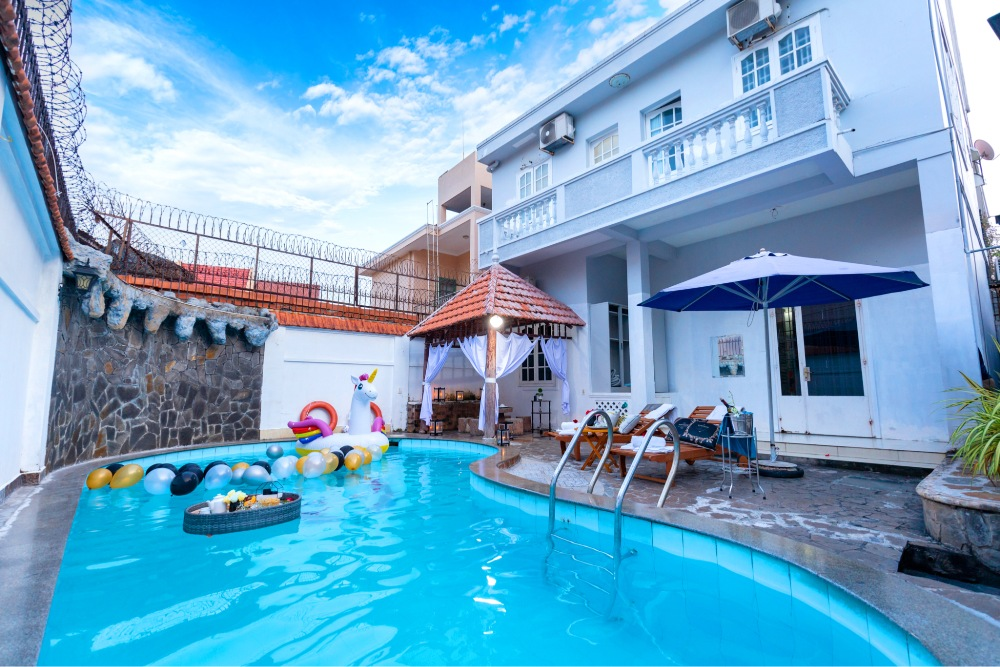

호치민은 가족 여행, 친구들과의 단체 여행, 생일 파티, 바비큐 모임에 적합한 프라이빗 풀빌라가 많은 도시입니다. 특히 2군, 타오디엔, 투득 지역은 조용한 주거 환경과 넓은 빌라가 많아 한국인 여행객에게 인기가 높습니다.
호치민 풀빌라를 선택할 때 확인할 점
풀빌라를 예약하기 전에는 위치, 침실 수, 욕실 수, 수영장 크기, 바비큐 가능 여부, 노래방 시설, 체크인 및 체크아웃 시간을 확인하는 것이 좋습니다. 단체 여행이라면 공용 공간이 넓은지, 주차 공간이 있는지도 함께 확인해야 합니다.

타오디엔과 투득 지역은 한국인 여행객이 자주 찾는 풀빌라 지역입니다. 조용한 분위기와 프라이빗한 공간을 원한다면 이 지역을 우선적으로 확인해보는 것이 좋습니다.
가족 여행에 적합한 풀빌라
가족 여행이라면 조용한 위치, 안전한 수영장, 넓은 거실과 주방이 있는 빌라가 좋습니다. 아이와 함께 이용하는 경우 계단 구조, 수영장 깊이, 침실 배치도 미리 확인하는 것이 안전합니다.
단체 모임과 생일 파티
단체 모임이나 생일 파티 목적이라면 넓은 공용 공간, 바비큐 공간, 주차 공간, 노래방 시설이 있는 빌라를 선택하는 것이 좋습니다. 특히 늦은 시간까지 이용할 계획이 있다면 소음 규정도 반드시 확인해야 합니다.

추천 이용 목적
- 가족 여행
- 친구들과의 단체 여행
- 생일 파티
- 바비큐 모임
- 회사 워크샵
- 주말 휴식
마무리
호치민 풀빌라는 호텔보다 더 프라이빗하고 자유로운 시간을 보낼 수 있다는 장점이 있습니다. 여행 인원과 목적에 맞는 빌라를 선택하면 더욱 편안하고 특별한 베트남 여행을 즐길 수 있습니다.
인원, 날짜, 원하는 지역을 알려주시면 조건에 맞는 풀빌라를 빠르게 추천해드립니다.